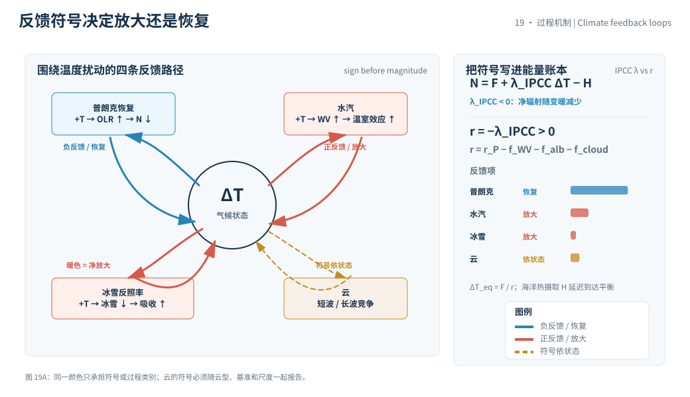
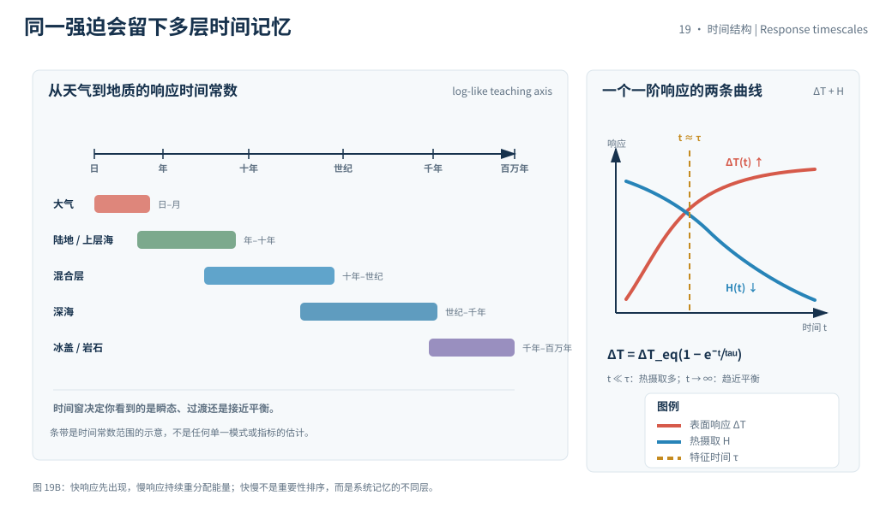

本页目录
19 · 反馈、敏感度与时滞
气候响应不是“强迫乘一个固定倍数”。水汽、云、冰雪反照率和普朗克恢复共同改变净辐射，海洋又把部分能量暂存起来。本页明确符号约定：先定义 IPCC 风格的反馈参数，再用一个正的恢复参数做账本，避免正负号误读。
资料核验日期：2026-09-01。实验默认值是线性一箱教学参数，不是 IPCC 对 ECS、TCR 或当前气候指标的估计；真实估计必须标报告版本、基准期和核验日期。
学习层：同样的强迫，为什么不同反馈与海洋时滞给出不同轨迹
1. 具体情境：同一笔辐射输入，两套气候响应账本
研究者拿到同一个教学强迫，分别使用“云反馈较弱”和“云反馈较强”的模型。短时间内两条温度路径可能相近，长期平衡值却不同；如果海洋热摄取更强，表面升温又会被推迟。
这个情境是比较模型结构的实验，不是未来变暖曲线的预言。要回答它，先把“恢复力”“放大反馈”“海洋热摄取”写到不同栏，再计算能量收支。
2. 揭示前预测：反馈强度和时滞的方向
打开实验前预测：固定强迫时，正的云放大项增加会让平衡升温变大还是变小？固定反馈时，把海洋时间常数调大，短时温度会更快还是更慢接近平衡？如果恢复参数降到零或负值，线性平衡解是否仍然有物理意义？
注意“强反馈”是因果增益的说法，“高敏感度”是响应结果；二者之间还隔着符号约定和其他过程。
3. 公式桥：IPCC 反馈参数、正恢复参数与敏感度
净顶层能量收支可以写成
其中 \(N\) 是净向下能量不平衡，\(F\) 是外部或有效强迫，\(H\) 是海洋等热摄取，\(\lambda_{\rm IPCC}=\partial N/\partial T\) 是按“净辐射随变暖的变化”定义的反馈参数。通常总反馈为负，负反馈提供恢复。
为使账本中的正数直观，定义
并把普朗克恢复、减去水汽、反照率和云的放大贡献写成
若固定强迫、忽略热摄取并满足线性近似，平衡响应是
这只是线性平衡模型中的响应，不是把一次 forcing 直接叫成 ECS。ECS 还特指二氧化碳加倍后、平衡状态下的全球平均地表温度变化；TCR则是指定浓度增长路径下的瞬态响应，不能用同一个无时滞公式替代。
一个一阶海洋时滞代理为
当 \(t\) 很小时，\(H\) 仍承接较多强迫；当 \(t\to\infty\)，\(H\to0\)，但这个极限依赖固定反馈和单一时间常数的假设。
4. 互动实验：同时读恢复参数、平衡敏感度和热摄取
无 JavaScript 时的静态 fallback：默认教学输入为 \(F=3.70\ \mathrm{W\,m^{-2}}\)、\(r_{\rm P}=3.20\)、\(f_{\rm WV}=1.00\)、\(f_{\rm alb}=0.30\)、\(f_{\rm cloud}=0.50\ \mathrm{W\,m^{-2}\,K^{-1}}\)、\(\tau_o=25\ \mathrm{yr}\)、\(t=50\ \mathrm{yr}\)。这些不是 IPCC 估计。
| 账本量 | 默认结果 | 单位 / 解释 |
|---|---|---|
| 正恢复参数 \(r\) | 1.40 | W/m²/K；\(3.20-1.00-0.30-0.50\) |
| IPCC 符号参数 \(\lambda_{\rm IPCC}\) | -1.40 | W/m²/K；\(-r\) |
| 线性平衡响应 | 2.64 | K；\(F/r\)，不是自动等于 ECS |
| 50 年瞬态响应 | 约 2.28 | K；一箱海洋时滞代理 |
| 50 年热摄取 \(H\) | 约 0.50 | W/m²；\(F-r\Delta T\) |
改变云放大项会先改变 \(r\) 与平衡响应；改变海洋时间常数会主要改变到达平衡的速度。边界测试中 \(r\le0\) 会显示“线性平衡不可用”。
5. 边界与常见误区：敏感度不是一条固定常数
- 反馈参数有符号约定：本页的 \(r\) 是正的恢复参数；IPCC 文献可能直接报告负的 \(\lambda_{\rm IPCC}\)。比较数字前必须确认定义。
- ECS 不是任意强迫下的即时比例：它有二氧化碳加倍、全球平均地表温度和平衡状态等限定；TCR、有效气候敏感度和瞬态响应也有各自实验设定。
- 海洋摄热不是反馈参数本身：\(H\) 是能量暂存/输送项，会改变路径；它不能被偷偷塞进 \(r\) 而不标注时间尺度。
- 线性化有范围：云、冰盖、植被、海洋环流和碳循环可能随状态改变；\(r\) 不是所有温度区间都保持不变。
如果 \(r\) 接近零，平衡响应会对参数误差极敏感；如果 \(r<0\)，本玩具模型没有稳定的有限平衡点，但这不等于现实气候会按指数无限升温，说明的是模型已越过其适用边界。
迁移问题：若加入一个随温度变强的冰雪反照率放大项，而云反馈同时变弱，你会如何重写 \(r(T)\) 而不是把两项相加成常数？若深海时间常数比上层海洋大一个数量级，单一 \(\tau_o\) 会掩盖哪一种观测时滞？


1. 反馈的物理链
普朗克响应是最基本的向外长波恢复：表面变暖会增加向外辐射。水汽通常增强温室效应，冰雪反照率变化会改变短波吸收，云同时影响短波反射和长波保温。符号由净效应和参考状态决定，不应只背“云是正反馈”。
反馈还可能有空间和时间结构。高纬冰雪、热带云和中高纬水汽对全球平均温度的贡献不同；同一过程的快速和慢速部分也可能被不同定义分开。
2. ECS、TCR与路径依赖
ECS是一个平衡概念，理想化实验通常让二氧化碳浓度加倍并等待气候系统接近新的平衡。TCR是在规定的逐步浓度增加路径下，达到某个时间点或浓度节点的瞬态响应。两者都不是单次天气事件的灵敏度。
海洋混合、冰盖、植被和碳循环会引入更长时间常数。因而同一个最终强迫，缓慢施加与快速施加可以产生不同的中间温度；路径不是只由终点决定。
3. 证据与定义来源
反馈与敏感度估计会综合能量收支、卫星、海洋热含量、历史强迫和气候模型。不同资料的符号、基准和强迫定义可能不同。
正式引用优先查 IPCC AR6 WGI 第 7 章 和 IPCC AR6 WGI。如果引用敏感度范围，需同时标报告版本、时间窗口、强迫设定、基准期和核验日期；本页没有把当前估计范围改写成实验默认值。
4. 速查结论
- 先声明 \(\lambda_{\rm IPCC}\) 或正恢复参数 \(r\) 的符号。
- 强迫是输入，反馈参数是响应斜率，敏感度是结果尺度。
- 海洋热摄取造成时滞，不等于把反馈项改名。
- ECS与TCR必须保留各自的实验条件和时间边界。
下一页把这些方程放进能量平衡模型、GCM与地球系统模型的层级，检查模型能回答什么。